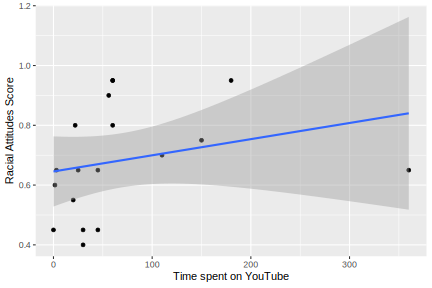

YouTube Kids: The Effect of YouTube on Children’s Racial Learning
Reilly Amera
MA Program in the Social Sciences, University of Chicago
YouTube Kids: The Effect of YouTube on Children’s Racial Learning
Introduction
Is YouTube making kids more racist? Despite sounding like the cultural fear-mongering often associated with screen time and development, such a question refers to real concerns that psychological research has yet to address: what are children really learning from YouTube, particularly with regard to race?
Literature Review
Much of the literature on how children learn about their racial world places great emphasis on the transmission of information that is explicitly about race: how parents talk about members of other racial groups, how and whether schools portray the histories of marginalized groups, how peers may communicate stereotypes, etc. (D. L. Hughes & Watford, 2022). In this view, ethnic-racial socialization, or the ways in which agents transmit messages about ethnicity and race to children, occurs through direct verbal instruction. However, in addition to more explicit transmissions of racial knowledge, children are simultaneously exposed to a barrage of more implicit environmental inputs—who they live near, for instance, or who they see on screens—which may also affect these conceptions (D. Hughes et al., 2023).
Not only does ethnic-racial socialization occur with explicit instruction, but so too do children attend to the racial patterns and organizations embedded into their environments and social settings (D. L. Hughes & Watford, 2022). Such environmental racial patterns—who tends to hold positions of authority, who tends to receive discipline in school, etc.—constitute racial regularities, or “persistent patterns in the relative social experiences of, or roles occupied by, two or more racial (or racialized groups) within a setting” (D. L. Hughes & Watford, 2022). In response to such patterns, children engage in racial learning, or the meaning-making of external messaging so as to form their own conceptions of how race works in their social world (D. L. Hughes & Watford, 2022). As such, when exposed to consistent, repeated regularities, children draw inferences as to why such patterns exist and persist; they may accept that such patterns as necessary features of ‘the way things are,’ or may even create explanations for such patterns (e.g. “White families live in big houses because they work hard” in contrast to “Black families live in big houses because they got lucky”) (D. Hughes et al., 2023; Rizzo et al., 2022). Further, this learning may be yet more implicit: when tested in the same environment, young children show levels of implicit biases, unconscious mental associations based on race or other social categories, similar to those of adults (Payne et al., 2017) This suggests that features of specific environments such as racial regularities not only affect explicitly articulated beliefs but implicit understandings of one’s social environment. As such, to fully understand how children’s conceptions of race form, we must examine the ways in which environments containing ontologically inaccurate racial regularities affect their racial learning.
One such environmental stream of input regarding race and racial regularities is social media. Children today have unparalleled access to social media platforms: YouTube, TikTok, Twitch, and more. On these sites, the sheer amount of content posted often outpaces enforcement of content guidelines, making it difficult to know exactly what children are seeing or learning from the content they are consuming. Unlike media such as television or movies, social media platforms are populated by both media corporations and individual content creators. YouTube is a social media platform that is particularly popular amongst children; many children use YouTube regularly: one third of parents of children aged 11 and younger surveyed by Pew Research Center indicated that they let their children use YouTube regularly (Smith et al., 2018). Further, amongst tweens and teens, video logs and gaming videos—types of content usually generated by influencers, not corporations—are the two most popular genres watched (Rollins et al., 2022).
Despite massive popularity, research on the effects of YouTube and other forms of social media on children’s race-related attitudes and behaviors has not been methodologically systematic (Ward & Bridgewater, 2023). Though YouTube has become a regular part of children’s lives, it is still unknown how YouTube may be affecting children’s conceptions of racial categories and associated beliefs about race. However, some research has emerged describing racial regularities on YouTube: in a review conducted by Common Sense Media, in YouTube videos watched by children under the age of 8, prominent characters of color were far more likely to engage in violent behaviors or inappropriate language, and were less likely to appear alongside educational content (Rollins et al., 2022). In another content analysis of the most popular YouTube videos at the time, more than three-fifths of videos in the sample included racial stereotypes, most of which reinforced and perpetuated them (Guo & Harlow, 2014). Taken together, we see that YouTube contains racial regularities in the form of stereotypes, which children may be accommodating into their beliefs, but there has not yet been any research confirming this connection.
While there is a body of research aimed at understanding how certain aspects of children’s environments contribute to the formation of racial attitudes, there is not as much focus on how YouTube, or other social media platforms, function as sites of racial socialization and learning via racial regularities. Similarly, though there have been some content analyses regarding the racial character of YouTube videos, such studies have yet to be done in conjunction with psychological measures of racial beliefs and attitudes. Due to this lack of research into how social media ecologies contribute to kids’ racial beliefs, I thus ask the question: are children for whom stereotypical social media is a part of their daily environment more likely to develop stereotyping or prejudicial racial beliefs and attitudes?
Present Study
This study will examine the relationship between YouTube usage and children’s development of racial attitudes, so as to understand whether and the degree to which YouTube may be a site of ethnic-racial socialization where children develop prejudices against those of other races.
I hypothesize that time spent on YouTube and children’s observation of racial regularities should covary; as children spend more time on YouTube, they may observe more negatively valenced racial regularities including people of color (Guo & Harlow, 2014; Rollins et al., 2022). Thus, I hypothesize that if children spend more time on YouTube, they will display greater racial stereotyping and prejudice against outgroups. While some children may not be consciously aware of on-screen racial regularities, these dynamics may still affect their racial attitudes (D. L. Hughes & Watford, 2022). As such, I hypothesize that the relationship between children’s time spent on YouTube and their exhibited racial stereotyping and prejudice will be mediated by their observations of negative racial regularities.
One additional factor that may moderate the relationship between time spent on YouTube and racial attitudes is whether a child’s favorite YouTuber is of a race other than their own, via the parasocial contact hypothesis. This theory suggests that when individuals have limited real life interpersonal contact with minority groups, the formation of parasocial (one-sided) relationships with outgroup media figures may reduce stereotyping and prejudice (Schiappa et al., 2005; Wong et al., 2022). Much of the parasocial contact hypothesis literature explores the prejudice reduction made possible by parasocial relationships with television characters, yet the growing popularity of social media presents another medium through which parasocial relationships may be formed. If positive parasocial contact hypothesis effects may be observed when individuals form relationships with characters in other media, so too should these effects be observed when individuals have parasocial relationships with outgroup influencers (Banas et al., 2020). Thus, I pose my third hypothesis: the relationship between the amount of time that children spend on YouTube and their racial stereotyping and prejudice will be moderated by whether they have a parasocial relationship with a favorite YouTuber of a race other than their own. Specifically, if children have a favorite YouTuber of a race other than their own and they have a parasocial relationship with this YouTuber, they will display less racial stereotyping and prejudice.
Methods
Participants and Procedures
This study will include children between the ages of 8 and 13. Though children may express negative racial attitudes prior to this point in development, during early adolescence, children develop the ability to recognize and reflect on the racial patterns and dynamics present in their environments (Hughes & Watford, 2022). As such, this age range should allow me to observe how the observation racial regularities present on YouTube may affect children’s stereotyping and prejudicial attitudes, and how such a phenomenon develops. Participants will be recruited through Qualtrics Panels, which will allow me to obtain a representative sample of parents and children; other studies have used Qualtrics Panels with similar methods and populations (Byrd & Ahn, 2020).
Data will be collected during February and March of 2025 from families recruited via Qualtrics Panels. Participating families will receive two Qualtrics surveys to be completed asynchronously, and they will receive compensation (around $10-$15; the final amount will be determined by Qualtrics Panels) after both surveys have been completed. First, parents will complete a demographics and YouTube usage survey, in which they will answer questions related to parent and child demographics (child age, race/ethnicity, parent income and level of education, etc), as well as questions regarding their child’s YouTube usage (for instance, time spent on YouTube, as reported by their child’s device screen time). Then, children will complete their own survey.
Measures
First, they will answer questions related to their YouTube usage (perceptions of time spent). Next, they will either answer more questions pertaining to YouTube content, or their general racial attitudes; either block of questions will appear randomly, so as to reduce the influence of question order. In the racial attitudes section, children will answer questions regarding outgroup prejudices, as rated on a Likert scale. They will also complete one friend choice item, as a simple exploratory measure of racial preference. In the YouTube content section, children will be asked to think of their favorite YouTuber as they answer questions related to whether they have a parasocial relationship with that YouTuber, as well as their observations of racial regularities on YouTube.
Results
Below is a simple regression displaying the relationship between time spent on YouTube and a child’s racial attitudes. Despite a visual upward trend, this relationship is not statistically significant: F(1, 15) = 1.15, p = = .300, R^2 = 0.07.
References
Banas, J. A., Bessarabova, E., & Massey, Z. B. (2020). Meta-Analysis on Mediated Contact and Prejudice. Human Communication Research, 46(2-3), 120–160. https://doi.org/10.1093/hcr/hqaa004
Guo, L., & Harlow, S. (2014). User-Generated Racism: An Analysis of Stereotypes of African Americans, Latinos, and Asians in YouTube Videos. Howard Journal of Communications, 25(3), 281–302. https://doi.org/10.1080/10646175.2014.925413
Hughes, D. L., & Watford, J. A. (2022). Racial regularities: Setting-level dynamics as a source of ethnic-racial socialization. American Journal of Community Psychology, 70(1-2), 3–17. https://doi.org/10.1002/ajcp.12565
Hughes, D., Cox, B., & Das, S. (2023). Growing Up, Learning Race: An Integration of Research on Cognitive Mechanisms and Socialization in Context. Annual Review of Developmental Psychology, 5(1), 137–167. https://doi.org/10.1146/annurev-devpsych-120321-015718
Payne, B. K., Vuletich, H. A., & Lundberg, K. B. (2017). The Bias of Crowds: How Implicit Bias Bridges Personal and Systemic Prejudice. Psychological Inquiry, 28(4), 233–248. https://doi.org/10.1080/1047840X.2017.1335568
Rizzo, M. T., Green, E. R., Dunham, Y., Bruneau, E., & Rhodes, M. (2022). Beliefs about social norms and racial inequalities predict variation in the early development of racial bias. Developmental Science, 25(2), e13170. https://doi.org/10.1111/desc.13170
Rollins, D., Bridgewater, E., Munzer, T., Weeks, H. M., Schaller, A., Yancich, M., Gipson, W., Drogos, K., Robb, M. B., & Radesky, J. S. (2022). Who Is the “You” in YouTube? Missed Opportunities in Race and Representation in Children’s YouTube Videos. Common Sense Media.
Smith, A., Toor, S., & van Kessel, P. (2018). Many Turn to YouTube for Children’s Content, News, How-To Lessons. Pew Research Center.
Ward, L. M., & Bridgewater, E. (2023). Media use and the development of racial attitudes among U.S. youth. Child Development Perspectives, 17(2), 83–89. https://doi.org/10.1111/cdep.12480
Wong, N. C. H., Massey, Z. B., Barbarti, J. L., Bessarabova, E., & Banas, J. A. (2022). Theorizing Prejudice Reduction via Mediated Intergroup Contact: Extending the Intergroup Contact Theory to Media Contexts. Journal of Media Psychology, 34(2), 89–100. https://doi.org/10.1027/1864-1105/a000338